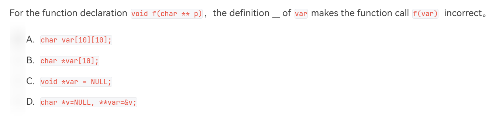

第六讲：期末复习（下）¶
Estimated time to read: 7 minutes
指针¶
形象理解¶
{kind=link}
指针的声明¶
int *p, q;
上面的代码中，* 用于修饰 p 变量，使其成为 int 指针类型 的变量；但是变量 q 并没有被* 修饰，所以其还是 int 类型 的变量。
指针的赋值¶
int a = 10;
int *p, *q = &a;
p = &a;
*p = 20;
- 上面的代码中，
int *q = &a是在定义 int 指针变量时立刻赋值； p = &a是在定义 int 指针变量后再将 a 的地址赋值给 p，此时我们不能在 p 前加 * ；*p = 20中的 * 是对指针 p 进行 取内容 操作，该指令是将数字 20 赋值给 p 中地址所代表的内容。因此在该代码执行之后，a 的值就变成了 20。
指针的运算¶
指针可以进行加减运算，得到的结果可以表示地址的差。 但注意 ，指针减法中涉及到的常数不是真正的地址之差，而是 地址差/该类型字节数 ，如：
Example1
int a[10];
int *p = a, *q = &a[1];
printf("%d", q - p);
Example2
int a[10] = {1, 2, 3, 4};
int *p = a;
printf("%d %d", *p, *(p + 1));
1 2，所以可见，p + 1 指向的是 a 数组中的 a[1] 位置，而不是 a[0] 的下一个字节处。
例1.4.1
int a[] = {1, 2, 3, 4, 5};
int *p = a, *q = &a[2];
printf("%lu\n", q - p);
Answer: 2
多级指针¶
int a = 10;
int *p = &a;
int **var = &p;
printf("%d = %d = %d", a, *p, **var);
注意
在程序中，最好不要混用不同级的指针。
数组和指针¶
数组名实际上就是一个指针，数组表示 a[1] 和指针表示 &(a + 1) 实际上指的是同一个东西，两者也可以相互转化。
此外，二维数组的地址分布和我们的直观感受并不相同，其有下面的规律：
二维数组
假设有：int a[3][2];
-
首先需要知道，二维数组中的地址是线性分布的。也就是说，
a[0][1]的下一个就是a[1][0] -
其次，二维数组是如何实现二维存储数据的呢？原因在于：a 是一个一维数组的指针。在上面的例子中，a 是一个长度为 2 的 int 数组的指针，所以
a[0]指向第一个一维数组，a[1]指向第二个一维数组。 -
实际上，我们可以使用
*(*(a + i) + j)来表示a[i][j]。因为*(a + i)指向第 i 个数组（假设叫 b），而我们可以用*(b + j)来表示b[j]。 -
另外，二维数组不能被隐式转换为二级指针 。我们不能肤浅的将二维数组理解为二级指针。实际上，无论我们定义多少维数组，其都是一级指针，只是指向的元素不同而已。
另外注意，int *p[3] 相当于定义了一个指针数组，其存储的数据都是 int 类型指针。
值得一提的是，字符串相当于一个以 '\0' 结尾的 char 类型数组。
字符串相关函数
头文件：<string.h>
strlen: 返回字符串长度（不包括末尾的 '\0'）
strcpy: 将 str2 直接拷贝到 str1 中（拷贝内容会包括 str2 末尾的 '\0'）
strcat: 将 str2 追加到 str1 的末尾（从 str1 的 '\0' 处开始追加）
strcmp: 对两个字符串做差，返回差值（用于比较两个字符串）
strncpy
strncat
strncmp
例1.6.1
 Answer: A
{kind=link}
例1.6.2
char str1[20] = "1234567890123";
char str2[20] = "hello";
strcpy(str1, str2);
int l = strlen(str1);
printf("%d %s\n", l, str1);
for(int i = 0; i < 10; ++ i)
{
printf("%c", str1[i]);
}
Answer:
5 hello
hello7890
例1.6.3
int a[3][3] = {1, 2, 3, 4, 5, 6, 7, 8, 9);
printf("%d\n", a[-1][5]);
Answer: 3
例1.6.4
给出：
char s[2][3] = {"ab", "cd"}, *p = (char *)s;
下面哪一项是正确且和 s[1][1] 的值相等？
A. *(s + 3)
B. *s + 2
C. p[1][1]
D. *++p + 2
Answer: D
例1.6.5
char *week[]={"Mon", "Tue", "Wed", "Thu", "Fri", "Sat", "Sun"}, **pw=week;
char c1, c2;
c1 = (*++pw)[1];
c2 = *++pw[1];
printf("%c %c\n", c1, c2);
Answer:
u e
{kind=link}
空指针和野指针¶
在程序中，我们可以使用 0 或 NULL 来表示一个空指针，当一个指针是空指针时，我们无法使用 * 来对该指针进行读取，会出现段错误。
因此，空指针在初始化和异常情况处理时非常重要。
用来处理什么异常情况呢？
野指针
当我们写
int *p;
*p = 10;
类似上面的例子，当我们写 int *p 时，我们并没有给这个指针 p 进行地址的赋值。这也就说明，我们并没有给 p 一个真正的空间，而是让这个指针乱指（显然，这是 100% 不安全的），这就是野指针。此时若我们对 p 进行取数据操作，自然会得到编译器的报错。
野指针也是初学者写相关程序最容易犯的错误（包括我）。因此，对指针进行初始化，防止指针乱指就变得非常有必要了。
例1.7.1
给出 char *s, str[10]，下列选项中表达完全正确的是：
A. strcpy(s, "hello");
B. str = "hello" + 1;
C. s = *&(str + 1);
D. s = str + 1
Answer: D
函数指针*¶
很少涉及，具体内容可以查看辅学网站。
形参和实参¶
实参
实际参数。其可以是常量、变量、表达式等等，在函数调用时，实参将具体的值传递给函数。
int a = 10;//这是实参
int b = 20;//这也是实参
形参
形式参数。其不是真实存在的变量，而是用来接收调用函数时传入的参数而设置的变量。
int max(int a, int b)//这里的 a, b 都是形参
{
return (a > b ? a : b);
}
需要注意的是，当我们使用实参将数据传到函数内部之后，我们在函数内使用的变量就不是原来的变量了，而是为了在函数内保存这些数据而自动设置的形参。所以，当我们在函数内对形参进行运算时，并不会对原来的实参产生任何影响 。 让我们来看下面的例子：
swap函数
void swap(int a, int b)
{
int t = a;
a = b;
b = t;
return ;
}
int main()
{
int a = 10, b = 20;
printf("%d %d\n", a, b);
swap(a, b);
printf("%d %d", a, b);
}
当我们运行之后，会发现：上下两行的输出结果没有任何改变。而原因就是上面提到的形参和实参。 那么我们应该如何自己实现 swap 功能呢？可以使用指针来解决。
Solution
void swap(int *a, int *b)
{
int t = *a;
*a = *b;
*b = t;
return ;
}
int main()
{
int a = 10, b = 20;
printf("%d %d\n", a, b);
swap(&a, &b);
printf("%d %d", a, b);
}
如上，我们在 swap 函数中使用指针来进行交换。此时，由于我们交换时使用的是指针存储地址所代表的数据，而函数传递指针参数时，这个地址作为被传递的数据是不会改变的（这里的形参是 swap 内的指针变量 a、b）所以我们在交换时可以直接影响到主函数中的变量 a、b，从而实现我们的目的。 所以，当我们需要在自定义函数中影响到原函数的变量时，可以将传递的参数改为变量的指针而不是原来的变量 。
链表 Linked-List¶
结构¶
大概的结构如下：
{kind=link}
其中，其中每一个点都是一个结构体，前后两个节点使用指针相连接。 最基本的链表大概是下面这个样子：
typedef struct List_Node* Node
struct List_Node{
Element_type data;
Node next;
};
讲点基础知识¶
结构体指针¶
比如我们现在定义了以下结构体和其指针：
struct course{
char *name;
float credit;
int score;
float point;
}A;
int main()
{
struct course* p = &A;
return 0;
}
A.name = "FDS";
A.credit = 2.5;
p -> name = "FDS";//当然，也可以写 (*p).name = "FDS"
p -> credit = 2.5;
Note
当我们使用指针来描述结构体时，需要使用 -> 符号而不是 . 符号。
内存分配与释放¶
在实际使用时，我们通常都需要让一个结构体指针指向一个实际有内存的结构体（也就是让 p 指向 A）。在上面的例子中，我们是先定义了结构体 A，然后再设了一个结构体指针指向 A。那么能否有一个更简便的做法呢？
小心野指针
注意，千万不要定义一个结构体指针 p 后就直接进行相关赋值。因为此时我们还没有给指针 p 分配一个确定的空间，可以理解成 p 指向了一个虚无缥缈的地方，是一个 野指针 。
此时，就需要 malloc 函数 了。其用法如下：
malloc
#include <stdlib.h>
void* malloc (size_t size);
malloc 函数的参数为 size，其是一个无符号整型，表示需要申请的空间大小。一般来说，我们可以借助 sizeof 来简单易懂的表示这个参数。 malloc 函数的返回值是 void 也就是无类型指针，当我们给一个指针用 malloc 申请空间时，需要在 malloc 前面使用其他指针类型强制转换。若 malloc 函数申请空间失败，其会返回 NULL 空指针，此时一定要注意检查。 注意：* 使用 malloc 函数申请空间之后，这块空间里面有什么内容是不确定的，所以在使用之前一定要对这些内存进行初始化。 举个栗子：
Example
对上面的例子来说，我们可以写以下代码：
struct course{
char *name;
float credit;
int score;
float point;
};
int main()
{
struct course* p = (struct course*)malloc(sizeof(struct course));
p -> name = NULL;
p -> credit = 0;
p -> score = 0;
p -> point = 0;
free(p);
return 0;
}
此外，由于指针 p 指向的空间是我们使用 malloc 函数向电脑申请的，当我们不再需要使用这块内存后，需要将这块内存 “还给” 电脑，此时需要使用 free 函数 。
free
使用 free(指针) 即可。
初始化¶
当我们需要新建一个链表时，一般都是先定义一个头节点，将其初始化为空指针 NULL。只有当我们需要往里面塞内容时，我们才向电脑申请空间并初始化、赋值等。
链表的遍历¶
对于一个数组而言，我们想访问这个数组什么地方就可以访问什么地方，只需要选对下标就可以。比如访问数组的开头：a[0]；访问数组的第五个位置：a[4]；访问数组末尾（假设数组有 10 个位置）：a[9]。
但是对链表而言，这样的操作是无法实现的。当我们需要访问链表末尾的数据时，只能从链表的头节点开始，一直沿着指针往下找，直到找到最后的位置为止。因此，在链表中访问数据非常消耗时间。
哨兵节点¶
或者可以叫做 ”僵尸节点“。 多数情况下，一个链表不会从头节点开始就存储数据，而是使用一个不存储数据的空白节点当作头节点，其后面使用指针连接其他存有数据的节点。这样的空白节点叫 哨兵节点 。
链表的其他形式¶
除了我们一开始提到的 “单向链表”，链表还有其他几种形式，如 ”双向链表“、”循环单向链表“、”循环双向链表“ 等。
例2.3.1
使用环形链表模仿约瑟夫问题。
链表的基本操作¶
以下都是以单向链表为例。
增¶
当我们需要往里面增加一个节点时，首先我们需要想办法直到插入节点的位置，也就是需要直到待插入节点的前驱节点是什么。 当我们得到前驱节点之后，就可以进行插入了。比如我们的前驱节点为 front，待插入节点为 p，f 原来的后驱节点为 back：
节点 p 赋值
Node back = front -> next;//将 front 的后驱节点 back 记录下来，方便后续操作
front -> next = p;//将 front 的后驱节点改为 p
p -> next = back;//将 p 的后驱节点赋值为 back
删¶
当我们需要删除一个节点时，首先也是需要找到待删除节点的位置。在找的同时，我们还需要一起记录当前点的前驱节点是什么。 当待删除点找到之后，假设为 p，其前驱节点为 front，p 的后驱节点为 back：
front -> next = p -> next;//将 front 的后驱节点改为 back，这里省略了记录 back 的过程
free(p);//记得将 p 的空间释放掉
改¶
当我们需要改变一个节点中的数据时，只需要先找到这个节点的位置，然后对其数据进行修改即可。
查¶
前面三个操作都是建立在查的基础上。当我们需要在链表中查一个点时，我们需要从头节点开始一直往下找，直到找到符合要求的点为止。
假设我们定义了一个函数 int check(Node p) 用来检验该节点是否是我们需要找的节点（符合要求则返回 1），并假设头节点为哨兵节点：
Node find(Node head)
{
Node p = head -> next;//从第一个存有数据的节点开始找
while(p != NULL)//一直找到整个链表全部遍历完为止
{
if(check(p))
{
return p;//若找到符合要求的节点，就返回这个点，同时结束程序
}
p = p -> next;//如果程序执行到这里，说明前面没找到。此时更新 p，让其变成下一个点，继续寻找
}
return NULL;//若执行到这里，说明遍历整个链表都没找到对应的节点。此时直接返回 NULL
}
输出链表¶
若我们需要将整个链表输出，只需要遍历整个链表，边遍历边打印即可。
假设该链表有哨兵节点，同时我们定义 void print(Node p) 用来输出相关数据。
Node p = head -> next;//从第一个存有数据的节点开始打印
while(p != NULL)//一直打印直到遍历完整个链表为止
{
print(p);//打印相关内容
p = p -> next;//更新 p，让 p 变为下一个节点继续打印
}
return ;
删除链表¶
当我们需要删除一个链表时，我们同样也需要遍历整个链表，一边遍历一边释放空间。 假设该链表有哨兵节点：
Node p = head, t;//哨兵节点同样需要删除
while(p != NULL)//直到遍历完整个链表为止
{
t = p -> next;//记录后驱节点
free(p);//释放空间
p = t;//更新 p
}
return ;
简单介绍两种数据结构¶
栈 stack¶
栈比较类似一摞碗，当我们需要拿碗或者放碗的时候，只能从最顶上开始拿或者放。
{kind=link}
使用数组或者链表都可以实现栈。
队列 queue¶
想象许多人排队站在狭窄通道内部，此时人需要出去就只能从最前面走，人需要进来就只能从最后面进。

同样的，使用数组或者链表都可以实现队列。
{kind=link}
多文件编程¶
宏¶
下面，我们来回顾一下宏定义相关的知识。
最基本的用法：定义一个常数¶
#define 的用法为：define <名字> <值> ，其最后不使用分号，
在程序开始编译之前，编译器会将程序中所有设计宏定义的量进行替换。
Note
- 若宏中嵌套其他的宏，则同样会被替换。
- 若宏太长以至于一行放不下，则需要在行末使用
\后再写下一行。 - 宏后面的注释不会起作用。
使用宏定义简单函数¶
宏定义可以使用参数，如：
#define cube(x) ((x) * (x) * (x))
Warning
当使用宏定义一个有参数的式子时，一定要注意加上括号。不仅是给参数加上括号，还要给整体加上括号，否则会出现错误。
Example
#define RADTODEG(x) (x * 57.29)
当我们写 RADTODEG(4 - 3) 时，编译器会替换为：4 - 3 * 57.29 ，和我们的目的相悖。
#define RADTODEG(x) (x) * 57.29
当我们写 4 / RADTODEG(3) 时，编译器会替换为：4 / 3 * 57.29 ，和我们的目的也相悖。
此外，我们还可以使用多个参数，构造更多的函数：
#define MAX(a,b) ((a) > (b) ? (a) : (b))
无定义值的 define¶
我们可以在文件开始写 #define SEARCH 类似的宏定义。这类宏定义的主要是起标识作用，一般需要和 #ifdef、#else、#endif 等配合使用。
也就是说，我们可以在文件一开始使用 #define 定义标识符，然后使用 #ifdef 标识符 检查前面是否有定义该标识符，若有，则执行 #ifdef 后面的程序；若没有，则执行 #else 后面的程序。最后，记得使用 #endif 做结尾。
多文件编程¶
当我们有很多很多代码及很多很多函数时，我们可以将这些函数放到不同的文件中分别编译，最后再连接到一起构成一个大程序。
而连接就需要通过 #include 定义。
快速上手¶
- 我们需要创建一个库函数文件，后缀是 '.h'。
- 在该文件中（我们假设叫 'a.h'），我们需要写：
#ifndef 某标识符 #define 某标识符//这里是为了防止之前已经定义过该标识符，从而出现重复声明的错误 你的函数声明 #endif - 然后我们需要创建一个 '.c' 文件，并在文件开头写上：
#include "a.h"//当引入同一目录下的库时，我们使用双引号；若我们使用 '<>'，则编译器会直接去指定目录下面寻找对应的库 - 并且，我们需要在该 'a.c' 文件内写上 'a.h' 中已声明函数的详细代码。
- 最后的最后，我们需要在包含主函数的 '.c' 文件中也写上
#include "a.h"。这样，就算大功告成了。 - 最后，我们只需要依靠一点手段将所有文件都编译连接即可。
原理？¶
我们可以将 #include 理解为一个接口，当我们在代码最开始写 #include 并编译、连接程序时，会根据 #include 后的文件将对应的函数和我们自己写的函数放到一起。所以我们才可以使用本文件定义函数之外的其他函数。
上面的例子中，我们写了 #include "a.h" ，在编译连接时，电脑会将同样接了 #include "a.h" 接口的 'a.c' 文件一起放进来，所以我们才可以使用其他文件定义的函数。
static 变量¶
观察下面的代码：
void function();
int main()
{
for(int i = 0; i < 5; ++ i)
{
function();
}
return 0;
}
void function()
{
int j = 1;
j ++;
printf("j = %d\n", j);
return ;
}
int j = 1 改为 static int j = 1 ，那么结果就会大大不同：
void function();
int main()
{
for(int i = 0; i < 5; ++ i)
{
function();
}
return 0;
}
void function()
{
static int j = 1;
j ++;
printf("j = %d\n", j);
return ;
}